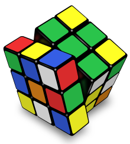
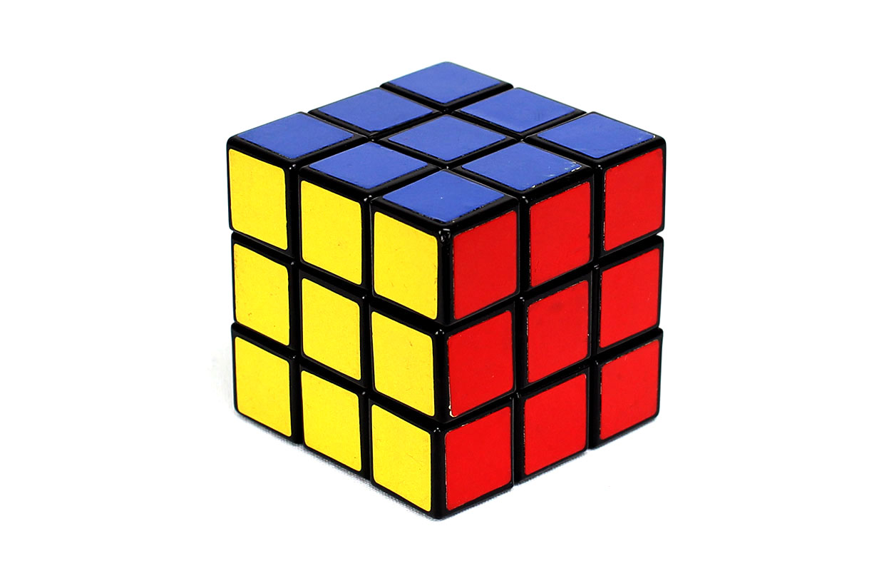
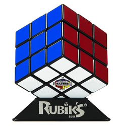

- 
- 
- 
Ernő Rubik (Hungarian: [ˈrubik ˈɛrnøː]; born 13 July 1944) is a Hungarian inventor, architect and professor of architecture. He is best known for the invention of mechanical puzzles including Rubik's Cube (1974), Rubik's Magic, Rubik's Magic: Master Edition, and Rubik's Snake. While Rubik became famous for inventing the Rubik's Cube and his other puzzles, much of his recent work involves the promotion of science in education. Rubik is involved with several organizations such as Beyond Rubik's Cube, the Rubik Learning Initiative and the Judit Polgar Foundation all of whose aim is to engage students in science, mathematics, and problem solving at a young age.Ernő Rubik was born in Budapest, Hungary, 13 July 1944, during World War II, and has lived all his life in Hungary. His father, Ernő Rubik Sr., was a flight engineer at the Esztergom aircraft factory, and his mother, Magdolna Szántó, was a poet. He has stated in almost every interview that he got his inspiration from his father. His father, Ernő Sr., was a highly respected engineer of gliders. His extensive work and expertise in this area gained him an international reputation as an expert in his field. Ernő Rubik has stated that:
Rubik's Cube
Rubik's Cube is a 3-D combination puzzle invented in 1974[1][2] by Hungarian sculptor and professor of architecture Ernő Rubik. Originally called the Magic Cube,[3] the puzzle was licensed by Rubik to be sold by Ideal Toy Corp. in 1980[4] via businessman Tibor Laczi and Seven Towns founder Tom Kremer,[5] and won the German Game of the Year special award for Best Puzzle that year. As of January 2009, 350 million cubes had been sold worldwide[6][7] making it the world's top-selling puzzle game.[8][9] It is widely considered to be the world's best-selling toy.[10]